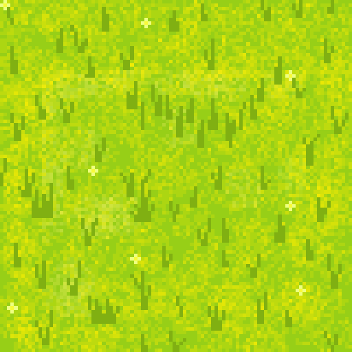
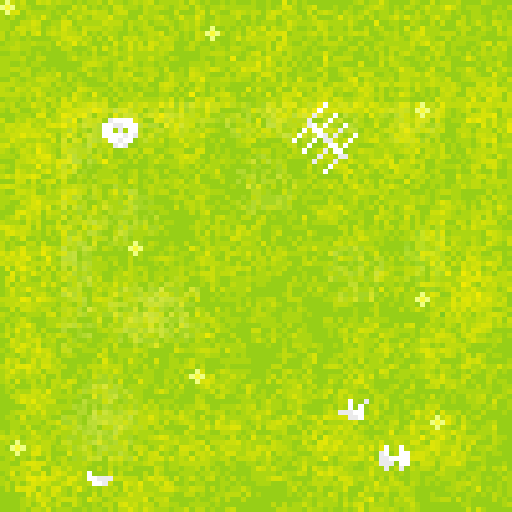
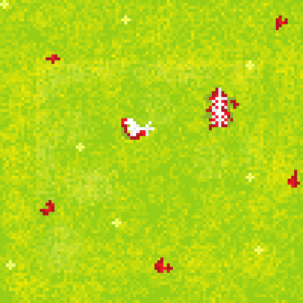
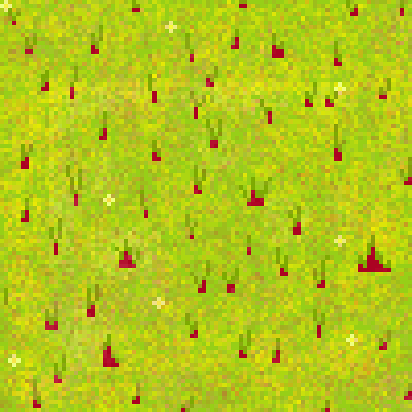
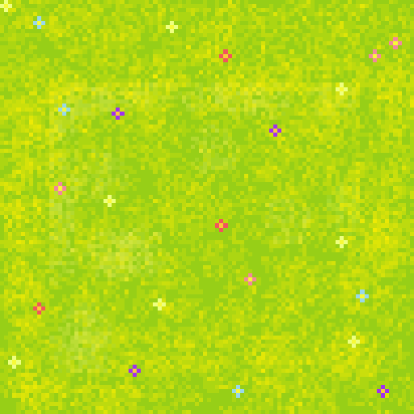

The High Grass Fields
Lush green fields teeming with life. Mostly common creatures.
Spawns: Slimes
Arcana Rift
Where you are decides what you fight — and how lucky you are decides how rare it is.
The world is split into biomes, and each one has its own pool of enemies. That means the creatures you meet depend entirely on where you are, which is what pushes you to travel: you have to go looking for a specific zone to finish a quest or hunt for rare loot.

Lush green fields teeming with life. Mostly common creatures.
Spawns: Slimes

An eerie field scattered with old bones, where the undead rise.
Spawns: Skeletons

A meadow where zombies wander endlessly among the fallen.
Spawns: Zombies

Corrupted land roamed by powerful demons. Only for the brave.
Spawns: Demons

A quiet place where cows eat flowers — but watch out for the angry ones.
Spawns: Cows
Within a zone, not every enemy is equally likely. The spawner uses a weighted roll to pick which variant appears. You'll see the common version almost every time, but there is always a small chance of something far rarer and considerably tougher — a Gold Slime, or a Demon King. Those pay out accordingly.